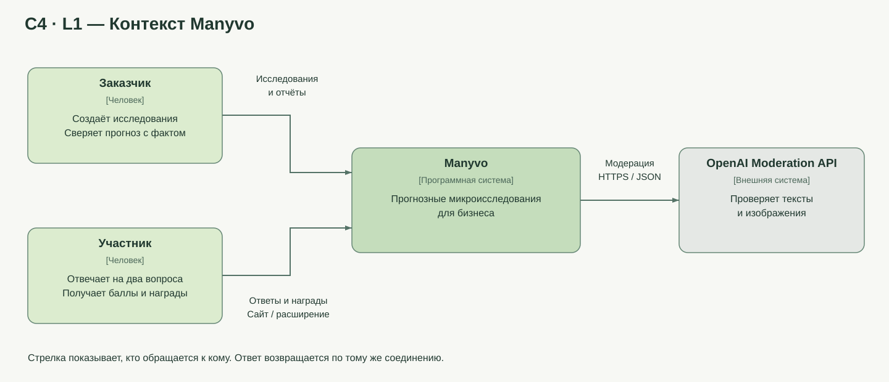
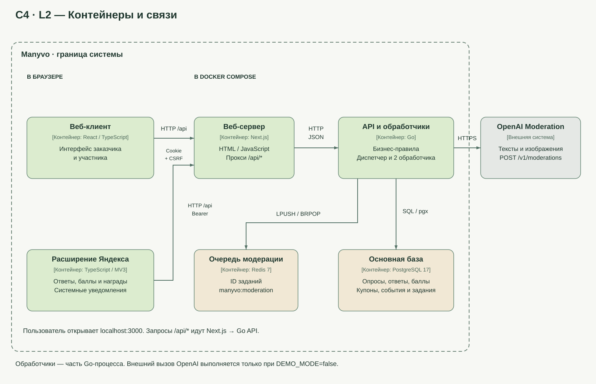
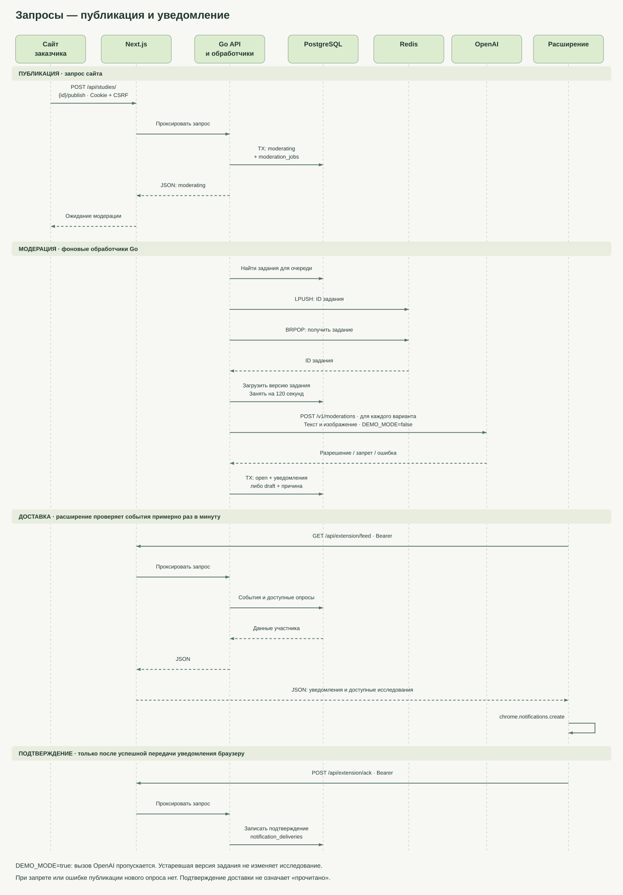

Схемы отражают текущий код. C4 показывает устройство системы, диаграмма последовательности — порядок запросов.
Кто пользуется Manyvo и с каким внешним сервисом он связан.

Из каких приложений и хранилищ состоит текущая реализация.

Публикация опроса, очередь модерации и доставка уведомления расширению.
